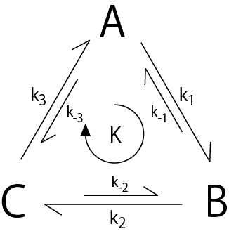

詳細釣り合い ( detailed balance )について-02
次に，逆反応がある場合の反応サイクルについて考えていきましょう．
反応サイクルは，以下のようになります．

前ページと同様に，正味の反応サイクルの速度は，K{M/s]，で表すことにしましょう．
各状態の濃度変化は，
となります（濃度一定のため）．また，全体の濃度は一定として，

とします．さあこれを解けばいいのですが．．．．まあ大変．．．ここは，Mathematicaに登場していただいて解くと（プログラムはこちら），

と解くことができます．
また定常状態なので，各遷移の速度は等しくなり，

となります．アクトミオシンなどの反応サイクルについては，上の図のように３状態でなく，もっと状態を増やしていって考えていけばいいものと思われます．